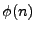
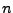
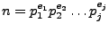
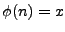
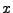
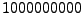

As you might know, Euler's totient function  is defined as the number of positive integers
a, a ≤ n that are relatively prime to . Two numbers are relatively prime if their
greatest common divisor is 1. If the prime factorization of
 is known the value of can be calculated via the following formula:
Now your task is to calculate the positive integers which fulfill the equation  for a given .
Input
The input consists of a number of lines. On each line there is a single positve integer
with no leading zeros. There are no spaces in the input. All numbers will be positive
integers smaller than .
Output
For each line of input there should be one line of output. If the equation
has a solution, print all its solutions on a single line.
The solutions should be printed in ascending order and should be seperated by a space. If
there is no solution to the equation, print: No solution.
Sample Input
Sample Output